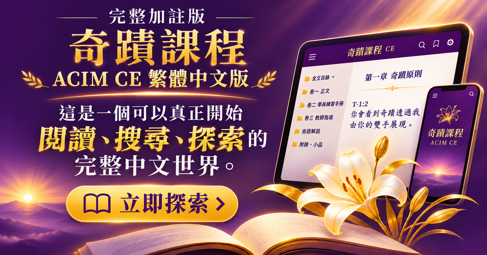

V40.30.2 簡化版：短鏈結測試
正文、33篇小品與57個詞條統一使用 /#ID。91個入口保留原文定位及英文對照；成功開啟連結不自動顯示底部引用框，所有連結共用首頁OG。精確內容由「複製引文」及系統分享文字提供。57個詞條同時包含中英文標題；分享框保留單一引文複製按鈕。
91個入口的實際瀏覽器定位
逐筆驗證標題、畫面命中、Highlight與不自動出現引用框；約需2分鐘，只在按下測試後執行。
尚未執行定位檢查。
共用OG資料
以下是所有短鏈結共用的首頁封面與簡介，並非各詞條獨立摘要，也不是LINE實測卡片。

完整加註版奇蹟課程
支援全文搜尋、註釋查閱及離線閱讀，隨時隨地探索奇蹟課程。
尚未執行OG檢查。
正文範例：T-14.VI.5:4、W-24.5:3 中英對照、T-2.IX.14:1 整段對照、W-FL。
主閱讀頁 · 引用規則 · 91個中英入口 · 更新說明